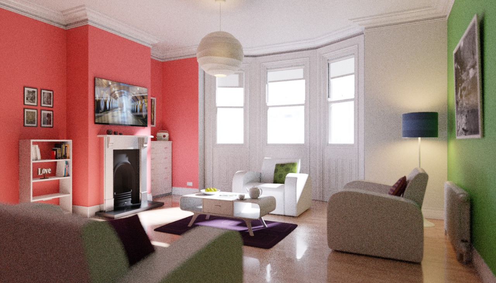
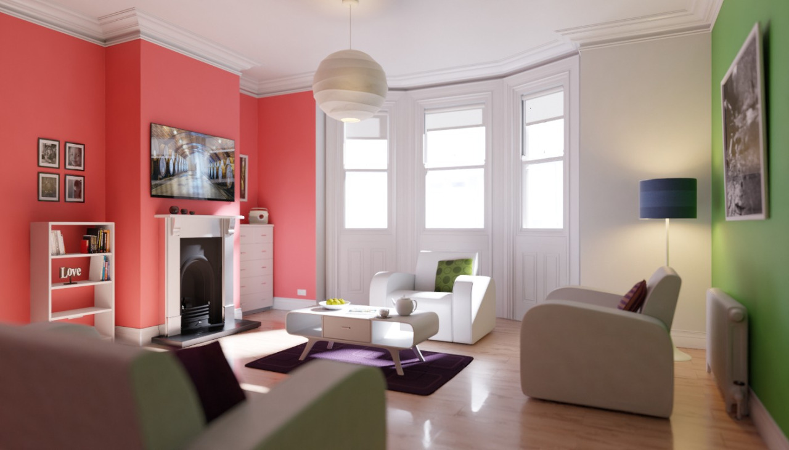

Denoising¶
Reference
| Panel: |
|---|
Denoising filters the resulting image using information (known as feature passes) gathered during rendering to get rid of noise, while preserving visual detail as well as possible.
To use the option, enable it in the render layers tab of the Properties editor. On rendering, it will denoise tile by tile once all the surrounding tiles are finished rendering. The default settings fit a wide range of scenes, but the user can tweak individual settings to control the trade-off between a noise-free image, image details, and calculation time.
Xem thêm
See the other ways to reduce noise on the general Noise Optimization page.
Options¶
Denoising panel.
- Radius
- Size of the image area that is used to denoise a pixel. Higher values are smoother, but might lose detail and are slower.
- Strength
- Controls how different the area around a neighbor pixel can look compared to the center pixel before it's no longer used for denoising. Lower values preserve more detail, but aren't as smooth.
- Feature Strength
- Controls removal of noisy and redundant image feature passes before the actual denoising. This is required in some cases like DoF or Motion Blur to avoid splotchy results, but might cause fine texture/geometrical detail to be lost. Lower values preserve more detail, but aren't as smooth.
- Relative Filter
- When removing features that don't carry information, decide which to keep based on the total amount of information in the features. This can help to reduce artifacts, but might cause detail loss around edges.
- Passes
- You can choose to selectively choose which Render Passes you want to denoise.
Notes and Issues¶
The denoiser will change in the future and some features are not implemented yet. If denoising fails to produce good results, more samples or clamping will often resolve the issue.
- Setting the radius too high is generally not advisable. It increases denoising time a lot and, while the result might be smoother, it is not more accurate since there isn't any additional info coming out of the renderer. Beyond a radius of ~15, the additional rendering time is probably better spent on increasing the amount of samples.
- Denoising cannot be used for baking yet.
- For animation denoising can be used, however it still requires high sample counts for good results. With low sample counts low frequency (blurry) noise can be visible in animation, even if it is not immediately apparent in still images.
- When using GPU rendering, the denoising process may use a significant amount of vRAM. If the GPU runs out of memory but renders fine without denoising, try reducing the tile size.
Examples¶
Below is an example render by The Pixelary.

Example render before denoising. |

Example render after denoising. |